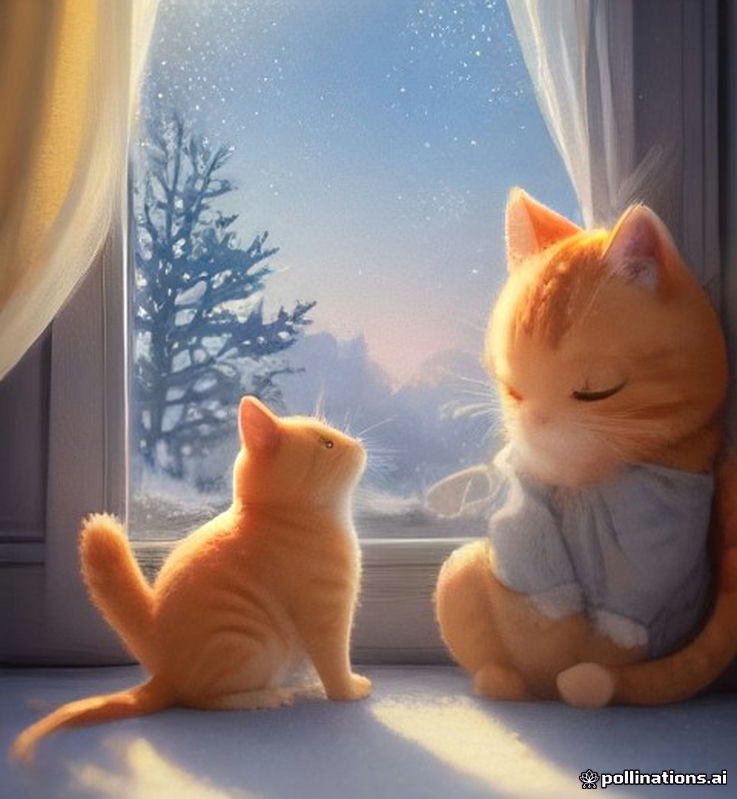
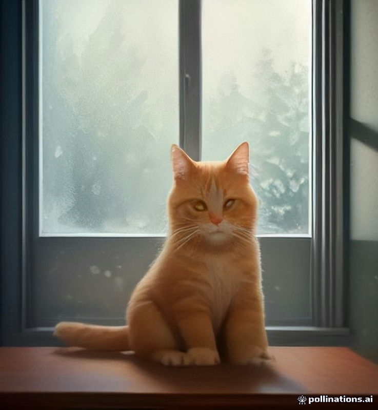
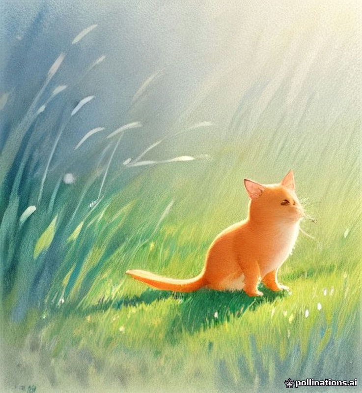
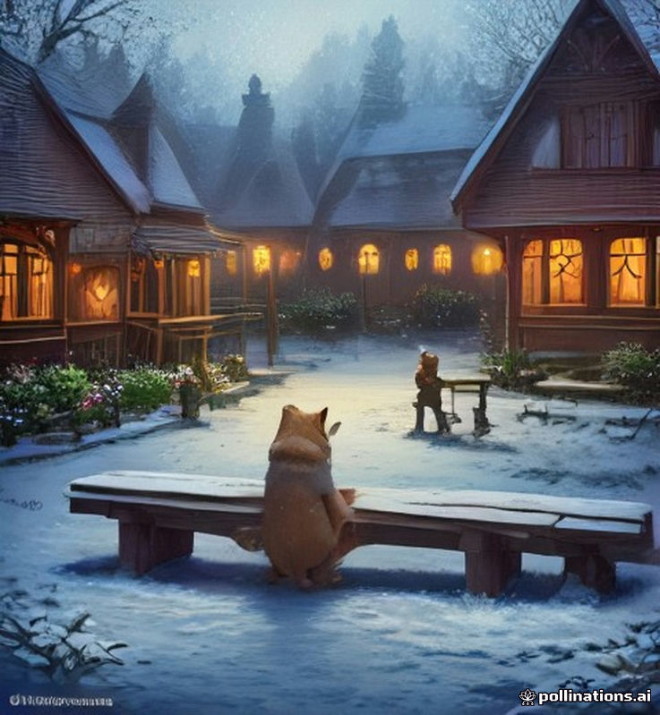
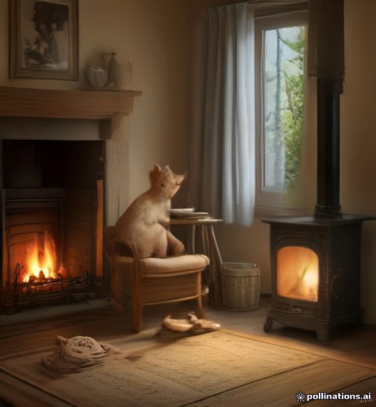

Pip the tiny mouse steps outside to discover a sparkling world of crystalline frost for the very first time.

The air inside Loki's kitchen smelled of warm toasted oat biscuits and cinnamon tea, but outside, the glass window pane had turned into a silver garden. Pip nestled deeper into the folds of my teal scarf before poking his whiskers out. He gasped softly. Every green leaf in the yard was trimmed with delicate white sugar-crystals that shimmered under the pale morning sun. Pip had never seen frost before, and his wide pink ears twitched with wonder as he realized the world had changed overnight.

We bundled up carefully before stepping past the cozy threshold. I wrapped a tiny red knit mitten around Pip's tail to keep him extra warm. As my paws crunched softly on the stiff grass blades, Pip gasped in surprise. The morning frost didn't melt like water, nor did it drift like deep snow. It was a crunching, glittery carpet underfoot. Pip leaned down from my head to touch a single blade of clover, squeaking with delight as his nose met the cool, sparkling lace.

Down by the plaza fountain, the water slept quietly beneath a clear thin sheet of ice. We set to work placing sunflower seeds along the wooden benches for the winter birds. Pip helped by carefully dropping each seed from his tiny paws onto the silvery wooden planks. Every breath we took made tiny puff-clouds in the chill air. Pip tried to chase his own little cloud, laughing as it vanished into the crisp breeze before he could catch it.

When the sun rose higher, painting the chilly sky in gentle shades of peach and lavender, we returned to our warm workshop stove. Pip curled into a snug felt cup right beside my favorite teacup, his belly full of warm porridge and his heart full of winter magic. Frost meant cold days were coming, but as long as we had cozy scarves, sweet seeds to share, and warm friends, the frosty mornings were just nature's way of dusting the world with magic.